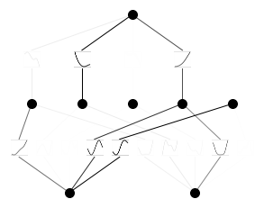

from kan import *KAN은 왜 해석 가능할까?
- width 2
- 2D input
- width 1
- 1D output
- width 5
- 5 hidden neurons
- k = 3
- cubic spline
- grid = 5
- 5 grid intervals
model = KAN(width=[2,5,1], grid = 5, k = 3, seed = 0)\(f(x,y) = \exp(\sin (\pi x ) + y^2)\)
f = lambda x: torch.exp(torch.sin(torch.pi*x[:,[0]]) + x[:,[1]]**2)n_var는 차원이라고 생각하면 될 듯?(\(x,y\) 두 개)
dataset = create_dataset(f,n_var = 2)dataset.keys()dict_keys(['train_input', 'test_input', 'train_label', 'test_label'])dataset이 만들어질때 grid는 shape에 영향을 주지 않음
dataset['train_input'].shape, dataset['test_input'].shape(torch.Size([1000, 2]), torch.Size([1000, 2]))step 1: sparsification하면서 train(pruning을 위한 과정)
모델 훈련하는 코드 마지막에 세미콜론 쓰면 history 안 나온다.
model.train(dataset, opt = "LBFGS", steps = 20, lamb = 0.01, lamb_entropy = 10.);train loss: 1.25e-01 | test loss: 1.32e-01 | reg: 2.80e+01 : 100%|██| 20/20 [00:04<00:00, 4.35it/s]model.plot()
step 2: 가지치기prune(학습할때 중요한 파라메터만 남기기 위함)
model = model.prune()model(dataset['train_input']);model.plot()Loss Function
\(\cal{l}_{total} = \cal{l}_{pred} = \lambda (\mu_1 \sum^{L-1}_{l=0} |\Psi_l|_1 + \mu_2 \sum^{L-1})_{l=1} S(\Psi_l))\)
결과적으로 1output이 형성되는 것을 볼 수 있음.
model.suggest_symbolic(0,0,0)
sin이 가장 좋음
model.suggest_symbolic(1,0,0)function , r2
gaussian , 0.941763162612915
tanh , 0.9183695912361145
sigmoid , 0.9179617166519165
arctan , 0.9141409397125244
abs , 0.9092889428138733('gaussian',
(<function kan.utils.<lambda>(x)>, <function kan.utils.<lambda>(x)>),
0.941763162612915)model.suggest_symbolic(0,1,0)function , r2
x^4 , 0.9780145883560181
cosh , 0.9724222421646118
x^2 , 0.8998713493347168
sin , 0.8987177014350891
gaussian , 0.8974652886390686('x^4',
(<function kan.utils.<lambda>(x)>, <function kan.utils.<lambda>(x)>),
0.9780145883560181)model.suggest_symbolic(1,0,0,topk=15)function , r2
gaussian , 0.941763162612915
tanh , 0.9183695912361145
sigmoid , 0.9179617166519165
arctan , 0.9141409397125244
abs , 0.9092889428138733
sin , 0.8965499401092529
x^2 , 0.8392592668533325
cosh , 0.8383433818817139
x^3 , 0.8352798223495483
x^4 , 0.8342778086662292
exp , 0.8325958251953125
1/x^4 , 0.8317351341247559
1/x^3 , 0.8315536975860596
1/x^2 , 0.8312462568283081
1/x , 0.8306641578674316('gaussian',
(<function kan.utils.<lambda>(x)>, <function kan.utils.<lambda>(x)>),
0.941763162612915)model.train(dataset,opt="LBFGS", steps=20);train loss: 8.28e-03 | test loss: 8.73e-03 | reg: 8.17e+00 : 100%|██| 20/20 [00:03<00:00, 5.48it/s]model.plot()model.suggest_symbolic(0,0,0)function , r2
gaussian , 0.9971072673797607
sin , 0.9970927834510803
x^2 , 0.99686199426651
cosh , 0.9968425631523132
x^3 , 0.9957089424133301('gaussian',
(<function kan.utils.<lambda>(x)>, <function kan.utils.<lambda>(x)>),
0.9971072673797607)model.suggest_symbolic(0,1,0)function , r2
abs , 0.918402373790741
gaussian , 0.9081349968910217
sin , 0.9048529267311096
x^2 , 0.8696524500846863
cosh , 0.8653781414031982('abs',
(<function kan.utils.<lambda>(x)>, <function kan.utils.<lambda>(x)>),
0.918402373790741)model.suggest_symbolic(1,0,0)function , r2
arctan , 0.9160346388816833
gaussian , 0.9011549949645996
tanh , 0.9008036851882935
sigmoid , 0.9007985591888428
1/x^4 , 0.8955882787704468('arctan',
(<function kan.utils.<lambda>(x)>, <function kan.utils.<lambda>(x)>),
0.9160346388816833)model.auto_symbolic()fixing (0,0,0) with gaussian, r2=0.9971072673797607
fixing (0,0,1) with sin, r2=0.9992966055870056
fixing (0,0,2) with sin, r2=0.9987211227416992
fixing (0,1,0) with abs, r2=0.918402373790741
fixing (0,1,1) with gaussian, r2=0.9743611216545105
fixing (0,1,2) with sin, r2=0.9322102665901184
fixing (1,0,0) with arctan, r2=0.9160346388816833
fixing (1,1,0) with tanh, r2=0.9999632239341736
fixing (1,2,0) with cosh, r2=0.9999960660934448model.train(dataset,opt="LBFGS", steps=20);train loss: 4.15e-03 | test loss: 4.18e-03 | reg: 1.40e+01 : 100%|██| 20/20 [00:04<00:00, 4.93it/s]model.plot()
formula, variables = model.symbolic_formula()formula[0]\(\displaystyle 0.04 \cosh{\left(- 1.0 \sin{\left(3.14 x_{1} + 9.42 \right)} + 8.04 \sin{\left(0.5 x_{2} - 7.85 \right)} + 11.95 \right)} - 54.26 \tanh{\left(18.88 \sin{\left(3.03 x_{1} - 0.11 \right)} + 47.66 + 11.28 e^{- 1.42 \left(1 - 0.91 x_{2}\right)^{2}} \right)} - 0.21 \operatorname{atan}{\left(11.39 \left|{9.66 x_{2} - 3.42}\right| - 63.68 + 94.66 e^{- 0.05 \left(- 0.75 x_{1} - 1\right)^{2}} \right)} + 54.58\)
formula, variables = model.symbolic_formula(var=['\\alpha','y'])formula[0]\(\displaystyle 0.04 \cosh{\left(- 1.0 \sin{\left(3.14 \alpha + 9.42 \right)} + 8.04 \sin{\left(0.5 y - 7.85 \right)} + 11.95 \right)} - 54.26 \tanh{\left(18.88 \sin{\left(3.03 \alpha - 0.11 \right)} + 47.66 + 11.28 e^{- 1.42 \left(1 - 0.91 y\right)^{2}} \right)} - 0.21 \operatorname{atan}{\left(11.39 \left|{9.66 y - 3.42}\right| - 63.68 + 94.66 e^{- 0.05 \left(- 0.75 \alpha - 1\right)^{2}} \right)} + 54.58\)
from sympy import *
diff(formula[0], variables[0])\(\displaystyle - 3104.0 \cdot \left(1 - \tanh^{2}{\left(18.88 \sin{\left(3.03 \alpha - 0.11 \right)} + 47.66 + 11.28 e^{- 1.42 \left(1 - 0.91 y\right)^{2}} \right)}\right) \cos{\left(3.03 \alpha - 0.11 \right)} - \frac{19.88 \left(- 0.056 \alpha - 0.075\right) e^{- 0.05 \left(- 0.75 \alpha - 1\right)^{2}}}{8961.0 \left(0.1203 \left|{9.66 y - 3.42}\right| - 0.6727 + e^{- 0.05 \left(- 0.75 \alpha - 1\right)^{2}}\right)^{2} + 1} - 0.125728130340576 \cos{\left(3.14 \alpha + 9.42 \right)} \sinh{\left(- 1.0 \sin{\left(3.14 \alpha + 9.42 \right)} + 8.04 \sin{\left(0.5 y - 7.85 \right)} + 11.95 \right)}\)
model.fix_symbolic(0,1,0,'cosh')r2 is 0.9257117509841919tensor(0.9257)model.train(dataset, opt="LBFGS", steps=20);train loss: 3.99e-03 | test loss: 4.03e-03 | reg: 1.40e+01 : 100%|██| 20/20 [00:01<00:00, 16.25it/s]model.plot()